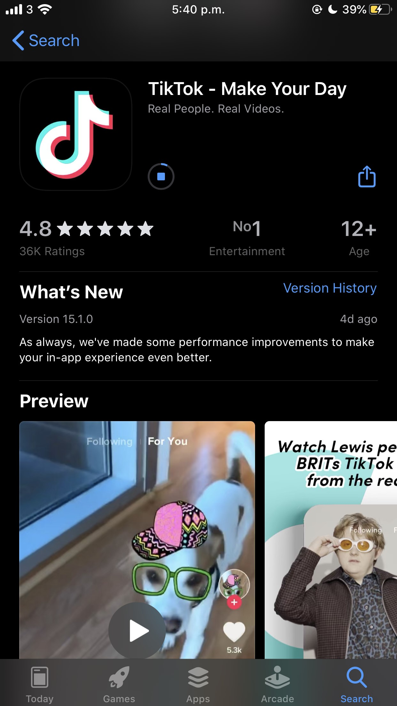
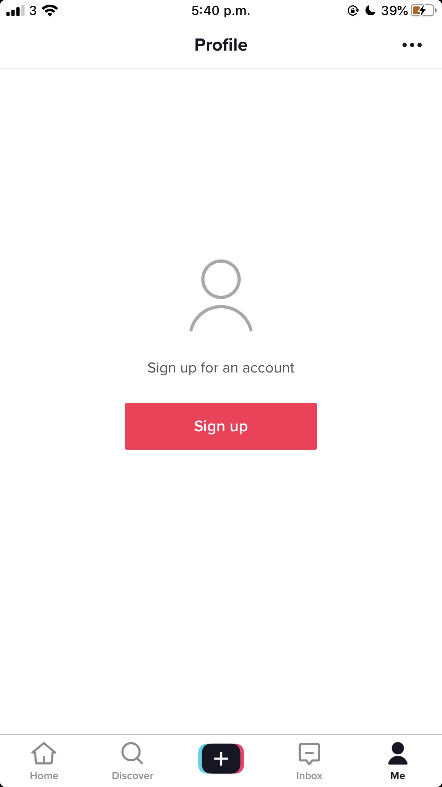
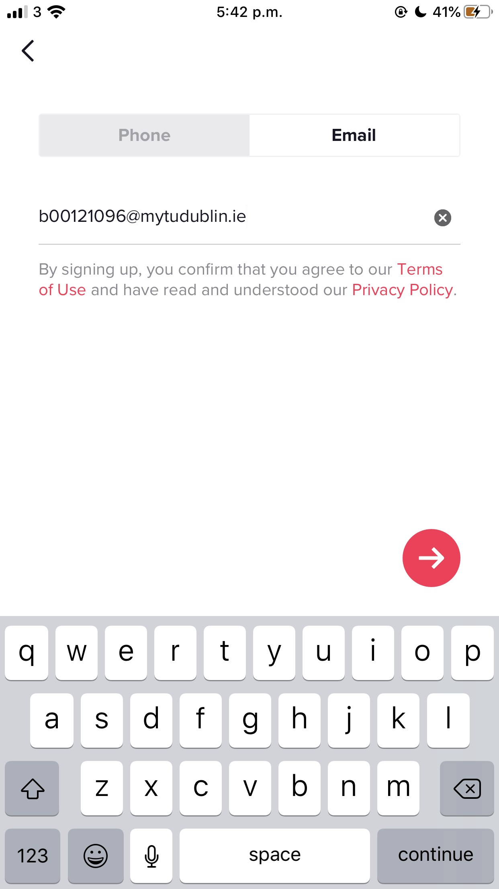
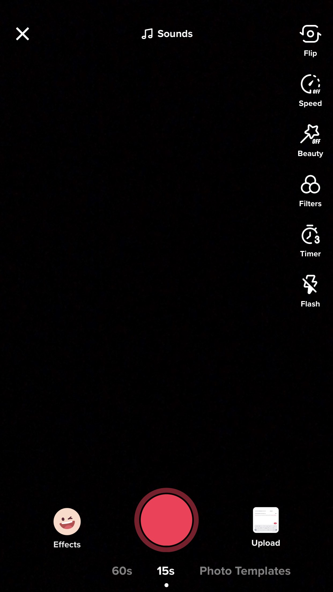
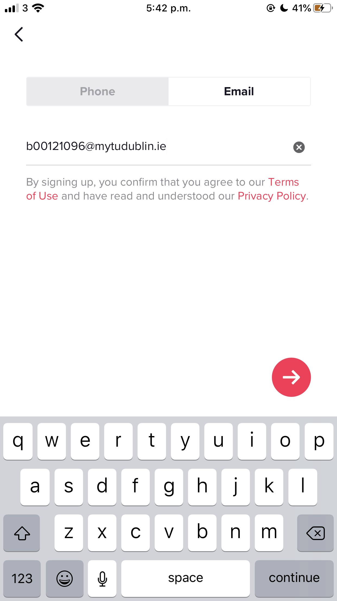
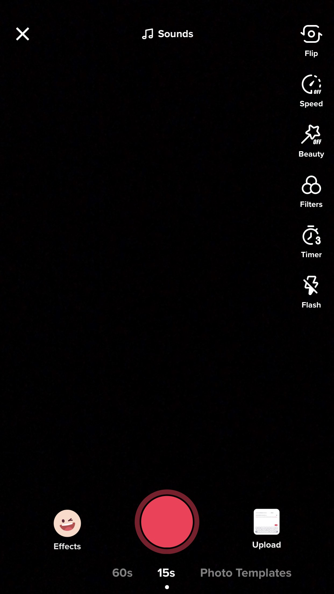

Social Media
Justin Flood
TikTok has changed the game for social media. It is a platform much like Instagram but JUST videos. Many people believe TikTok is brand new, but in actual fact it’s been around for much longer. TikTok actually was once a well known app “Musical.ly” but changed its name to TikTok in August 2018. The brand owner of Musical.ly decided it would be better to merge its community with those of TikTok to gain a better recognition within the industry. The decision was certainly a good one as now TikTok is worth over a whopping 80 BILLION. TikTok is fastly becoming one of the most used APPS on the app store. One of the main reasons is because of its analytics. A user may go onto instagram and receive maybe 4/5k views on their work, but on TikTok, their work is reaching numbers by the millions.
You don’t have to register for TikTok to use the app, although it is recommended that you do so that you can fully enjoy the app as the videos you see will be tailored to your preferences. To register for TikTok, you must download the app from the App Store (for iPhone/iPad) and the Play Store (for Androids). TikTok is also available as a website but you cannot create an account this way.
1. Locate the app on the app store and download it so it shows up on your home screen.
2. Click on the sign up button and choose how you are going to create your account. I will be using e-mail.
3. Enter all details that you are prompted for.
4. Start making your TikToks!
  



One of the main problematics or challenges about the app tik tok is likes. This creates a competitive environment where each person has to create a better video or have more likes and this can turn the app from being a great entertainment and learning space to a very negative and competitive space very quickly.
In our generation today its all about success and whoever has better this or that and with tik toc viewers and creators see a video or “trend” doing well going viral and they tend to jump on the bandwagon, this can be a major challenge as a lot of the time the challenge or video trending could be harmful and through a platform so big as tik tok with everyone doing it , it can be almost promoted for example in 2018 there was the “tide pods” challenge in which young children and teens would take clothing washing pods and put them in there mouth and bite them, this is obviously extremely dangerous but through the use of an app like tik tok it began to be a trend that was “cool” so this is definitely a main challenge within this app.
A few months ago www,chroniclelive.uk issued a statement about the dangers and warnings of Tik Tok and how it can be misused, Schools across the uk were issued warning letters for parents of young children using the app and the dangers it can have.
A story was released about a young 13 year old girl who posted a video of herself dancing much like others using the app and it had been targetted by perdofiles who had left crude messages in the comment box asking about the young girl. This is a major warning about the app as everyone can see any video posted if the account is not on private which not a lot of users know.
Tik Tok has a section on the app rules and regulations about an anti bullying policy and what they do to prevent bullying in their software, there list of how they improve and make sure there anti bullying policy stays in place is by, approving who follows your account and having access to make your account private or public.
You can delete a fan or block a user at any moment. This allows the user blocked to know longer view your profile or message you.
Report - Tik Tok has an option to report a user or comment in which the app then must review this if a user feels in any way harassed.
Using social media for education is a big thing today. Even things like moodle for college work would be fairly recent. There are other platforms such as Slack and Kahoot to also aid the learning process.
Depending on the subject of learning, popular apps like Instagram and Twitter can also be used educationally. Using specific hashtags on these apps is a great way to keep up to date with work being done by the particular group. TikTok can also use hashtags to specify what videos are for teaching/learning. TikTok is a Chinese video sharing platform made in 2012. It was available globally in 2017. Since then, TikTok has developed many different uses, some of them involving teaching and learning.
Before even thinking about anything academic, TikTok has been a place where you could learn something new. These include the popular video topic “life hacks”. This is where a user explains a trick to use in everyday life to make a certain task or chore a little more manageable. Other things you could learn from Tik Tok also include cooking, fitness tips, and even how to do the most popular dance trends.
The most obvious example of TikTok being used for education however, is when the #EduTok programme was launched. This is a form of eLearning where users can post videos to teach others about various different topics, ranging from fitness workouts to solving mathematical equations. As of its launch, the genre of videos has received over 48 billion views on the app.